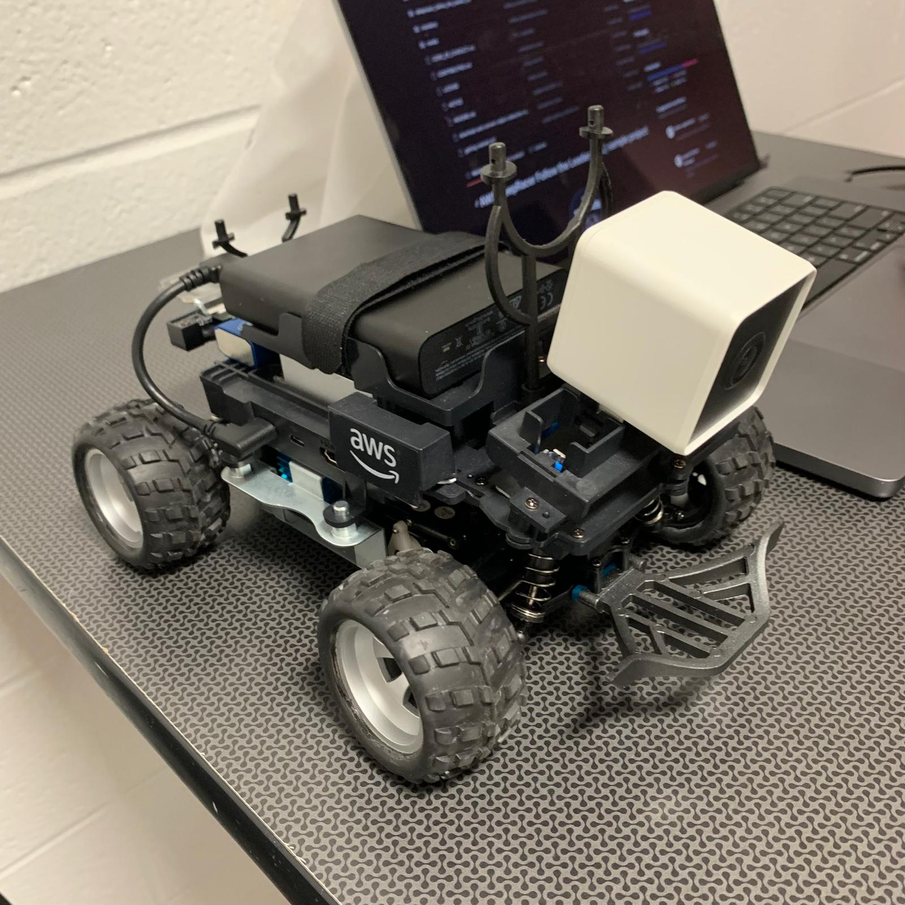
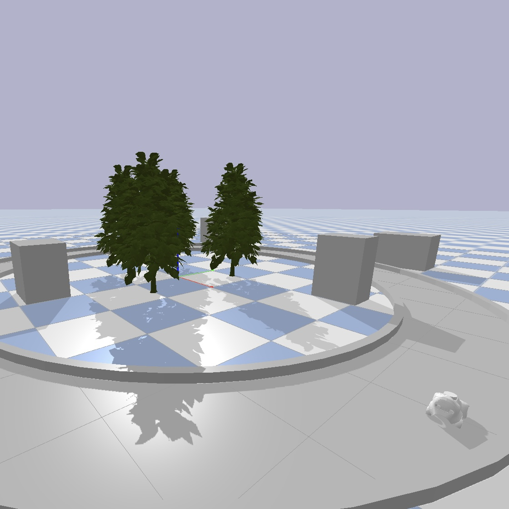
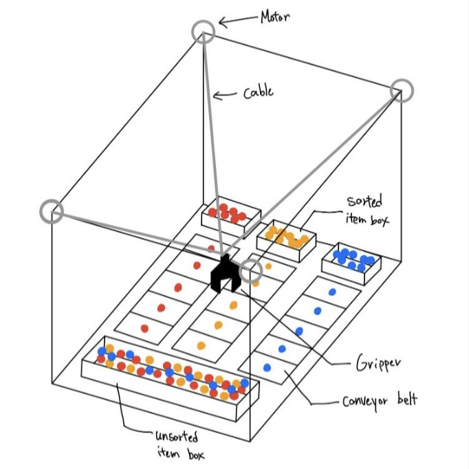

I recently completed my MS in Mechanical Engineering @ Columbia University. I'm continuing my research in the ROAM Lab with Eric Chang, and in Prof. Homayoon Beigi’s group. My work focuses on robotics, with an emphasis on tactile sensing, signal processing, and control systems.
Before joining Columbia, I received my Bachelors degree in Mechanical Engineering @ New York University, where I worked in the Control/Robotics Research Lab (CRRL) on the autonomous navigation using SLAM algorithms.
[5-2025] Joined Prof. Homayoon Beigi's (non-linear system) group
[5-2025] Graduated from Columbia University!
[5-2024] Joined ROAM Lab
[1-2024] Joined DitecT Lab
[9-2023] Started MS Program @ Columbia University
[1-2023] Graduated from New York University!
[6-2022] Joined CRRL
My current research focuses on tactile sensing, robotic manipulation, and control systems, aiming to develop robots that better understand and respond to the physical world.
Hand Gesture-Based Robotic Gripper Control
Research Project | ROAM Lab | Columbia University
Built a vision-based control system for robotic grippers, integrating ArUco markers and MediaPipe for hands-free operation.

Vision-Guided Localization for Scaled Smart Intersection using ArUco Marker Tracking
Research Project | DitecT Lab | Columbia University
Developed a real-time ArUco marker detection system with OpenCV, allowing for efficient processing and accurate determination of position, orientation, and speed of markers.

A ROS-Integrated PyBullet Simulation Framework for AWS DeepRacer
Research Project | DitecT Lab | Columbia University
Designed simulation framework for autonomous vehicles using ROS2 and PyBullet, enabling machine learning model testing without physical hardware. Paper / Github

Cable-Driven Parallel Robot with Adaptive Velocity Controller in Distribution Warehouse
Course Project | MECE E4602 Introduction to Robotics | Columbia University
Developed an adaptive velocity controller for a 4-cable-driven parallel robot, enabling dynamic speed adjustments based on the different objects, which enhances precision in handling diverse materials. Paper / Video
{kind=link}